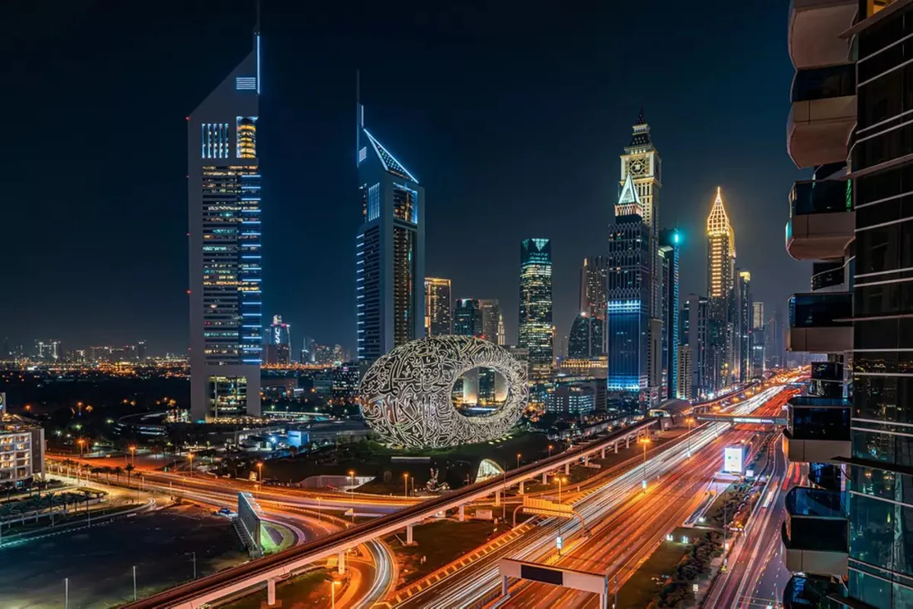
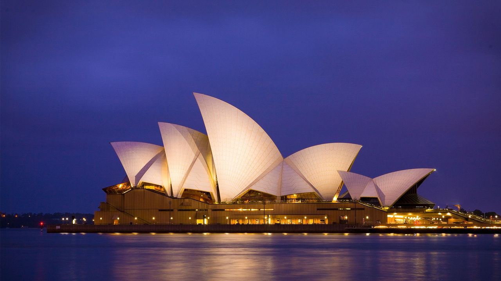

| HOME | DESTINATONS | BOOK NOW | CONTACT | |||||||||||||||
| 1.Roma |
|
|---|---|

|
Rome, a city steeped in history and culture, offers a plethora of tourist attractions. The most popular include the Colosseum, the Pantheon, Trevi Fountain, and the Roman Forum. Other notable sites include Vatican City (St. Peter's Basilica, Sistine Chapel), the Spanish Steps, and Castel Sant'Angelo. | 2.Dubai |
|
 |
Dubai is a city and emirate in the United Arab Emirates known for luxury shopping, ultramodern architecture and a lively nightlife scene. Burj Khalifa, an 830m-tall tower, dominates the skyscraper-filled skyline. At its foot lies Dubai Fountain, with jets and lights choreographed to music. On artificial islands just offshore is Atlantis, The Palm, a resort with water and marine-animal parks. | 3.Lotus Temple |
|
 |
The Lotus Temple is a Baháʼí House of Worship in Kalkaji, New Delhi, Delhi, India. It was completed in December 1986. Notable for its lotus-like shape, it has become a prominent attraction in the city. Like all Bahá’í Houses of Worship, the Lotus Temple is open to all people, regardless of religion or any other qualification. The building is composed of 27 free-standing marble-clad "petals" arranged in clusters of three to form nine sides, with nine doors opening onto a central hall with a height of slightly over 34 metresand a capacity of 1,300 people. The Lotus Temple has won numerous architectural awards and has been featured in many newspaper and magazine articles.[ | 4.London |

|
The Temple area of London, while primarily a legal district, also offers several tourist attractions, particularly around Temple Underground Station. The most notable is the BAPS Shri Swaminarayan Mandir in Neasden. Additionally, the Temple precinct itself, with Temple Church, is a place of historical and architectural interest. |